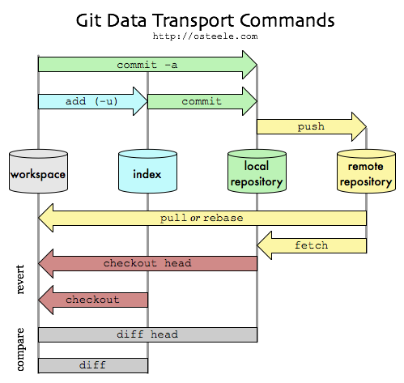
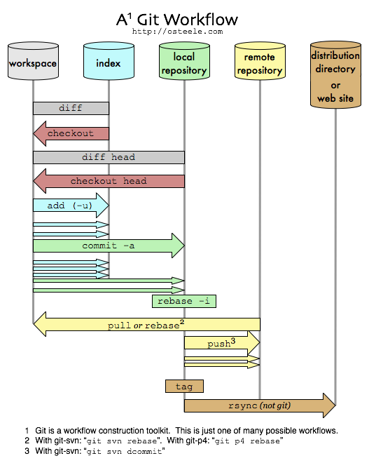

Git‘s great! But it’s difficult to learn (it was for me, anyway) — especially the index, which unlike the power-user features, comes up in day-to-day operation.
Here’s my path to enlightment, and how I ended up using the index in my particular workflow. There are other workflows, but this one is mine.
What this isn’t: a Git tutorial. It doesn’t tell you how to set up git, or use it. I don’t cover branches, or merging, or tags, or blobs. There are dozens of really great articles about Git on the web; here are some. What’s here are just some pictures that aren’t about branches or blobs, that I wished I’d been able to look at six months ago when I was trying to figure this stuff out; I still haven’t seen them elsewhere, so here they are now.
My brief history with Git
I started using Git about six months ago, in order to productively subcontract for a company that still uses Perforce. Before that I had been a happy Mercurial user; before that, a Darcs devotee; before that, a mildly satisfied Subversion supplicant; and before that, a Perforce proponent. (That last was before the other systems even existed. I introduced Perforce into a couple of companies that had previously been using SourceSafe(!) — including the one I was now contracting for.)
Each of these systems has flaws. Perforce and Subversion require an always-on connection and make branching (and merging) expensive, and Perforce uses pessimistic locking too (you have to check a file out before you can edit it). I got hit by the exponential merge bug in Darcs (since fixed?); a deeper problem was that I found I wanted to be able to go back in time more often than I needed to commute patches, whereas Darcs makes the latter easy at the expense of the former — so Darcs’ theory of patches, although insightful and beautiful, just didn’t match my workflow.
Git’s problem is its complexity. Half of that is because it’s actually more powerful than the other systems: it’s got features that make it look scary but that you can ignore. Another half is that Git uses nonstandard names for about half its most common operations. (The rest of the VCS world has more or less settled on a basic command set, with names such as “checkout” and “revert”. Not Git!) And the third half is the index. The index is a mechanism for preventing what you commit from matching what you tested in your working directory. Huh?
Git without the index
I got through my first four months of Git by pretending it was Subversion. (A faster implementation of Subversion, that works offline, with non-awful branches and merging, that can run as a client to Perforce — but still basically Subversion.) The executive summary of this mode of operation is that if you use “git commit -a“ instead of “git commit“, you can ignore the index altogether. You can alias ci to “commit -a“ (and train yourself not to use the longer commit, which I hadn’t been doing anyway), and then you don’t have to remember the command-line argument either:
$ cat ~/.gitconfig [alias] ci = commit -a co = checkout st = status -a $ git ci -m ‘some changes’
Adding Back the Index
Git keeps copies of your source tree in the locations in this diagram1. (I’ll call these locations “data stores”.)

The data store that’s new, relative to every other DVCS that I know about, is the “index”. The one that’s new relative to centralized VCS’s such as Subversion and Perforce is the “local repository”.
The illustration shows that “git add“ is the only (everyday) operation that can cause the index to diverge from the local repository. The only reason (in Subversion-emulation mode) to use “git add“ is so that “git commit“ will see your changes. The -a</a> option to "<code>git commit” causes “git commit“ to run “git add -u“ first — in which case you never need to run "git add -u” explicitly — in which case the index stays in sync with the repository head. This is how the trick in “git without the index” works: if you always use commit via “git commit -a“, you can ignore the index2.
So what’s the point of the index? Is it because Linus likes complicated things? Is to one-up all the other repositories? Is it to increase the complexity of system, so that you have a chance to shoot yourself in the foot if you’re not an alpha enough geek?
Well, probably. But it’s good for something else as well. Several things, actually; I’ll show you one (that I use), and point you to another.
But first, a piece of background that helps in understanding Git. Git isn’t at its core a VCS. It’s really a distributed versioning file system, down to its own fsck and gc. It was developed as the bottom layer of a VCS, but the VCS layer, which provides the conventional VCS commands (commit, checkout, branch), is more like an uneven veneer than like the “porcelain” it’s sometimes called: bits of file system (git core) internals poke through.
The disadvantage of this (leaky) layering is that Git is complicated. If you look up how to diff against yesterday’s 1pm sources in git diff, it will send you to git rev-parse from the core; if you look up git checkout, you may end up at git-check-ref-format. Most of this you can ignore, but it takes some reading to figure out which.
The advantage of the layering is that you can use Git to build your own workflows. Some of these workflows involve the index. Like the other fancy Git features, bulding your own workflows is something that you can ignore initially, and add when you get to where you need it. This is, historically, how I’ve used the index: I ignored it until I was comfortable with more of Git, and now I use it for a more productive workflow than I had with other VCS’s. It’s not my main reason for using Git, but it’s turned to a strength from being a liability.
My Git Workflow
Added: By way of illustration, here’s how I use Git. I’m not recommending this particular workflow; instead, I’m hoping that it can further illustrate the relation between the workspace, the index, and the repository; and also the more general idea of using Git to build a workflow.
I use the index as a checkpoint. When I’m about to make a change that might go awry — when I want to explore some direction that I’m not sure if I can follow through on or even whether it’s a good idea, such as a conceptually demanding refactoring or changing a representation type — I checkpoint my work into the index. If this is the first change I’ve made since my last commit, then I can use the local repository as a checkpoint, but often I’ve got one conceptual change that I’m implementing as a set of little steps. I want to checkpoint after each step, but save the commit until I’ve gotten back to working, tested code. (More on this tomorrow.)
Added: This way I can checkpoint every few minutes. It’s a very cheap operation, and I don’t have to spend time cleaning up the checkpoints later. “git diff“ tells me what I’ve changed since the last checkpoint; “git diff head“ shows what’s changed since the last commit. “git checkout .“ reverts to the last checkpoint; “git checkout head .“ reverts to the last commit. And “git stash“ and “git checkout -m -b“ operate on the changes since the last commit, which is what I want.
I’m most efficient when I can fearlessly try out risky changes. Having a test suite is one way to be fearless: the fear of having to step through a set of manual steps to test each changed code path, or worse yet missing some, inhibits creativity. Being able to roll back changes to the last checkpoint eliminates another source of fear.
I used to make copies of files before I edited them; my directory would end up littered with files like code.java.1 and code.java.2, which I would periodically sweep away. Having Git handle the checkpoint and diff with them makes all this go faster. (Having painless branches does the same for longer-running experiments, but I don’t want to create and then destroy a branch for every five-minute change.)
Here’s another picture of the same Git commands, this time shown along a second axis, time, proceeding from top to bottom. [This is the behavior diagram to the last picture’s dataflow diagram. Kind of.] A number of local edits adds up to something I checkpoint to the index via “git add -u“; after a while I’ve collected something I’m ready to commit; and every so many commits I push everything so far to a remote repository, for backup (although I’ve got other backup systems), and for sharing.

I’ve even added another step, releasing a distribution, that goes outside of git. This uses rsync (or scp, or some other build or deployment tool) to upload a tar file (or update a web site, or build a binary to place on a DVD).
Some Alternatives
Ryan Tomayko has written an excellent essay about a completely different way to use the repository. I recommend it wholeheartedly.
Ryan’s workflow is completely incompatible with mine. Ryan uses the repository to tease apart the changes in his working directory into a sequence of separate commits. I prefer to commit only code that I’ve tested in my directory, so Ryan’s method doesn’t work for me. I set pending work aside via git stash or git checkout -m -b when I know I might need to interrupt it with another change; this sounds like it might not work for Ryan. Neither one of these workflows is wrong (and I could easily use Ryan’s, I’m just slightly more efficient with mine); Git supports them both.
There’s another way to do this particular task — of checkpointing after every few edits, but only persisting some of these checkpoints into the repository. This is to commit each checkpoint to the repository (and go back to ignoring the index — at least for checkpointing — so this might work with Ryan’s), and rebase them later. Git lets you squash a number of commits into a single commit before you push it to a public repository (and edit, reorder, and drop unpushed commits too) — that’s the rebase -i block in the previous illustration, and you can read about it here. This is a perfectly legitimate mode of operation; it’s just one that I don’t use.
Both of these alternatives harken back to Git as being a tool for designing VCS workflows, as much as being a VCS system itself. The reasons I don’t use them myself bring us to Commit Policies, which I’ll write about tomorrow.
1 This picture shows just those commands that copy data between the local repository, the remote repository, the index, and your workspace. There’s lots more going on inside these repositories (branches, tags, and heads; or, blobs, trees, commits, and refs). In fact, during a merge, there’s more going on inside the index, too (“mine”, “ours”, and “theirs”). To a first approximation, all that’s orthogonal to how data gets between data stores; we’ll ignore it.
2 This isn’t quite true. You still need to use “git add“ a new file to tell git about it, and at that point it’s in your index but not in your repository. You still don’t need to think about the repository in order to use it this way
Comments
Your del.icio.us link in the first paragraph is broken. It is working as a relative link.
Great couple of post on Git. I'm learning and this material is gold. Thanks a lot!.
So it's like a (local) TFS shelveset?
Excellent article.
You mentioned that you use git-p4 and I have been trying to use it; however, things aren't working nicely for me. If you need article ideas, I would love to hear about how you set that up and any pitfalls you have run into.
Cheers
Your diagrams are exactly what's been missing from all the git tutorials out there.
Ditto. If the article had nothing else, that one picture is worth a thousand typed or spoken words.
I'm a happy Mercurial user (like simple things) but I'm interested in what Git has to offer to have a better workflow.
That is, with Mercurial you could do a similar workflow using queues. They are just a series of patches which are stacked over the history of your local repository. They can be reordered, pushed, poped... and whatnot.
So it would work like this.
hg qinit #init queues
hg qnew mywork #new queue patch
Now you do your work:
hg add
hg del
...
hg qrefresh #commits work to the top patch of queue (mywork). This is the checkpointing command
When you are happy with the patch and want to make it a "real" revision, just:
hg qremove --rev mywork
And that is, I don't know if I'm mising part of your workflow, please let me know what you think about this.
I love the diagrams!
One unmentioned commit management feature is `git commit --amend` which would allow you to update the last commit with new edits. If you're familiar with `git rebase -i` squashing, then this is like squashing your index into the last commit. You could also amend with the working files by using `git commit --amend -a` or providing specific files on the command line.
I think both `git stash` and `git commit --amend` have their uses, and I use them both in my workflow.
Finally, I would also like to mention that `git add -i` has a hidden feature of being able to stage individual lines of change, not complete files. If there is some debug code in your file, you can commit everything else. You can also use `git gui` to stage individual "hunks" (blocks of a diff) for commit.
-Bart
It might not hurt to make your underlined edits look different than your underlined links.
"I got hit by the exponential merge bug in Darcs (since fixed?)..."
Yes, in Darcs 2 (just recently released). It's a very solid release, but I can't speak to whether it would be more satisfactory as far as 'going back in time'.
What you describe sounds no different from using a branch, except that by checkpointing into the index, you're losing all of your recent history.
Something I maybe didn't make clear enough is that I actually don't want the fine-grained history in the repository. I might make a checkpoint every five minutes, and many of these checkpoints are pretty low quality; I don't want them persisted.
It would be nice to have all the checkpoints persisted until the next persistable commit, and then blow them away at that point. (I just made up "persistable commit" to mean one that I want to keep in the repository, as opposed to the ones that represent ephemeral checkpoints, if I implement checkpointing as commit.) The alternative for doing that that I mention is to commit checkpoints, and then rebase them away. One disadvantage of doing this is the extra step of the rebase, along with having to remember where to rebase from. The other is that "git diff head" won't tell me what I want. Maybe tagging every persistable commit solves both these problems.
Or I could, as you suggest, make a branch, commit my checkpoints into it, "merge -squash" it into the target branch, and then delete the branch. Then a persistable commit becomes "git checkout {original}; git merge --squash wip; git commit; git checkout -b wip", where {original} depends on which branch I started from. And "git diff head" becomes "git diff {original}", where, again, {original} depends on where I started. This is heavier weight than I want, but again, maybe some scripting and/or tags makes it easier.
Right now I like the fact that "git checkout head .", "git stash", and "git checkout -m -b" operate on everything since the last persistable commit. All those things would be harder, or I'd need to write more scripts/tagging to do them, if checkpoints were commits too.
Anyway, I really started out trying to draw a picture of how the index fit in, not to try to promote my particular workflow. I've added a disclaimer paragraph to try to make this clearer.